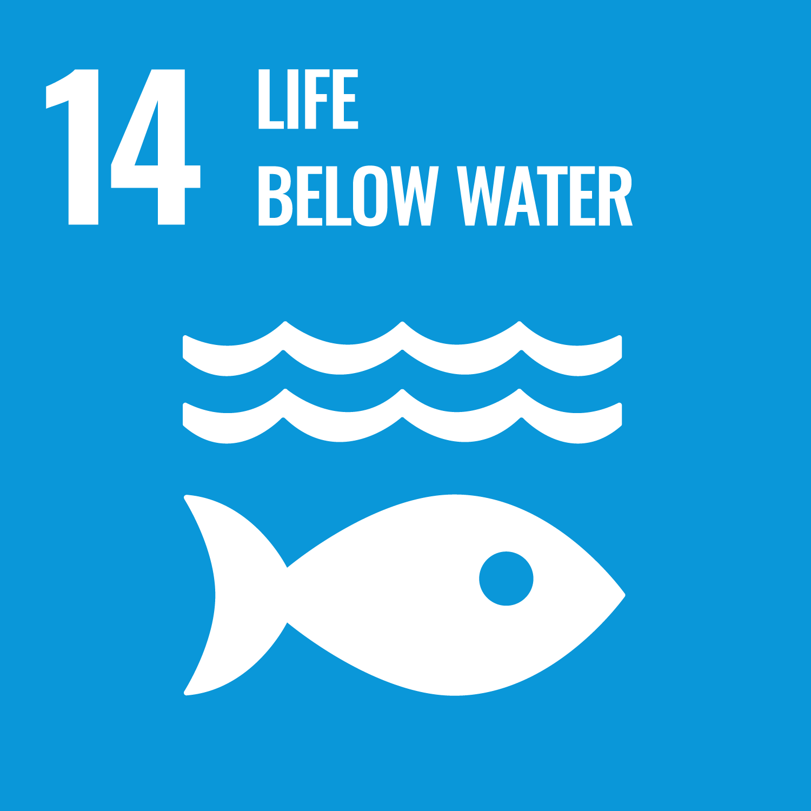
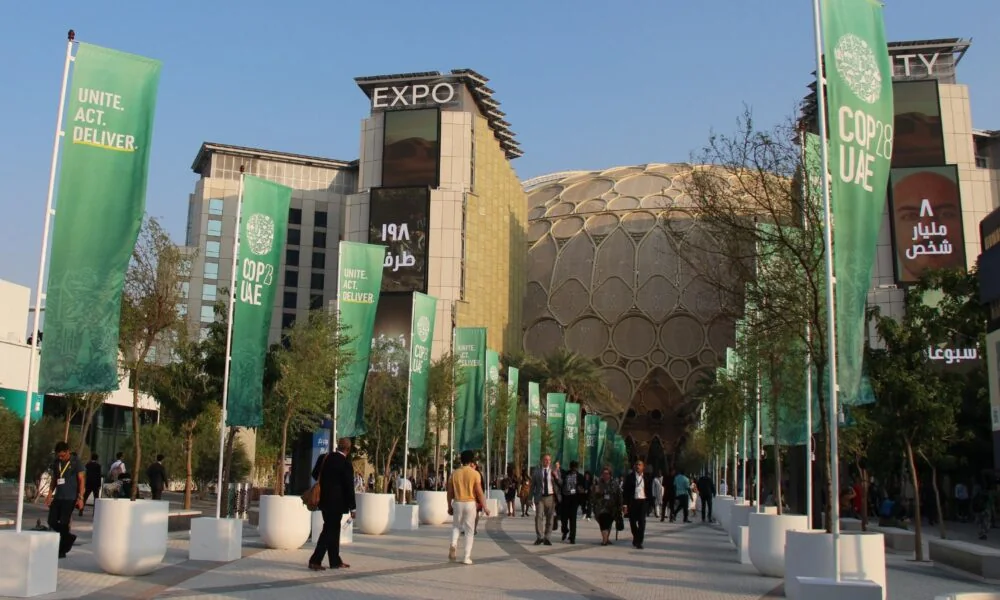
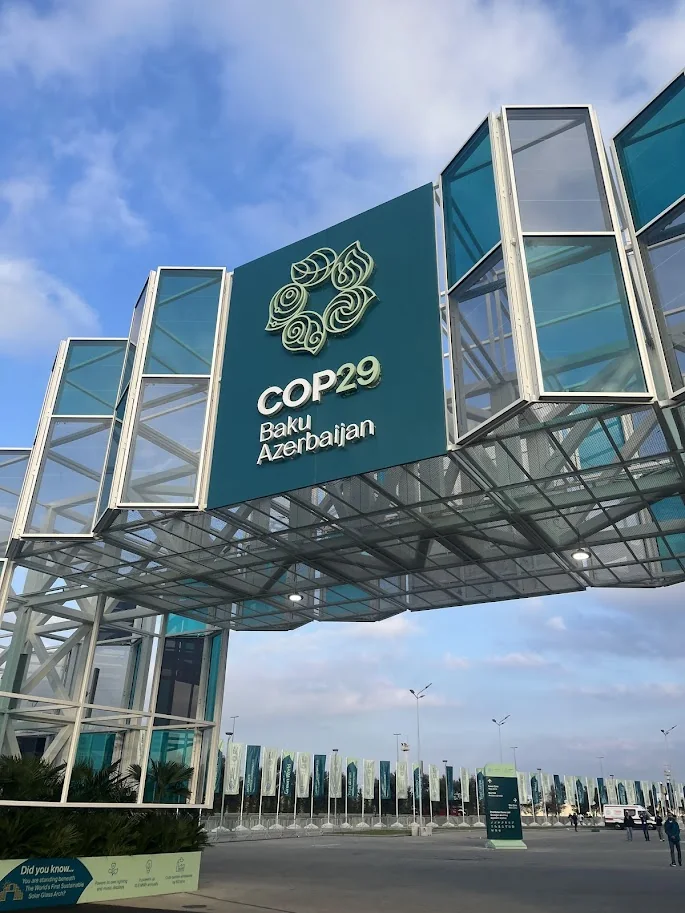
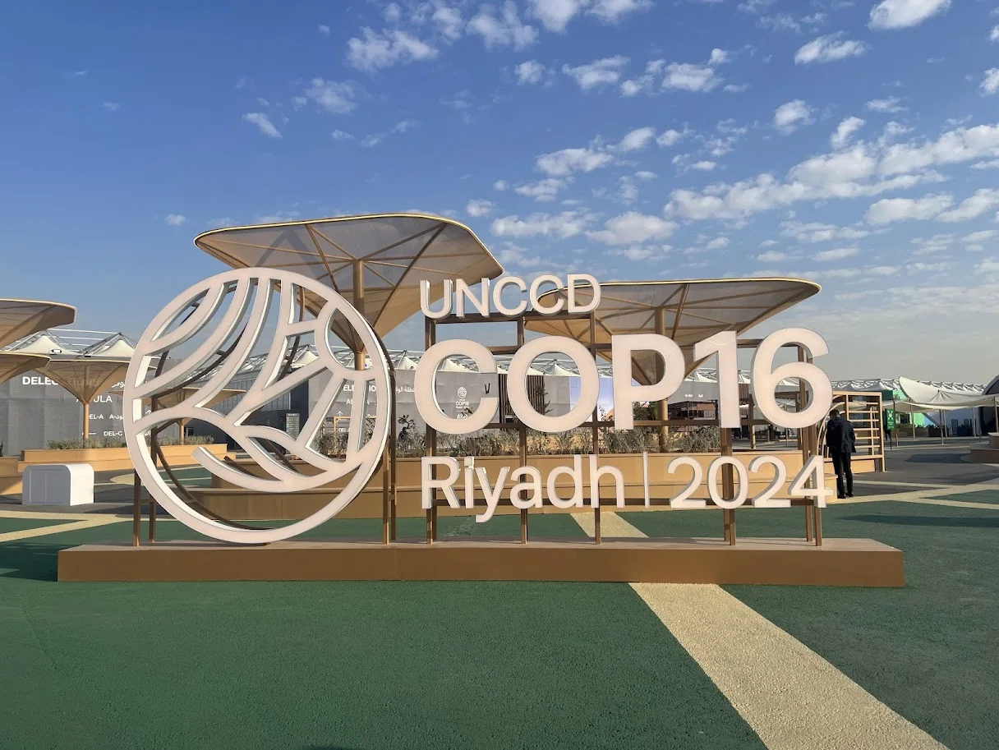
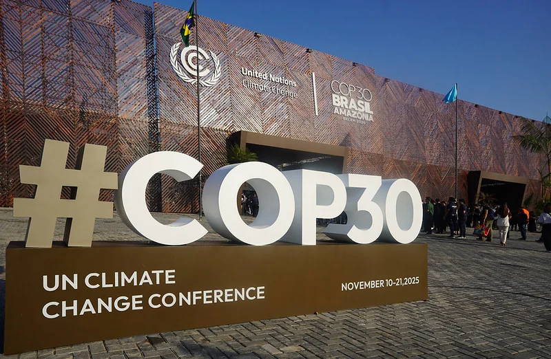

Biodiversity protection
Reduce human pressure on wildlife, strengthen rehabilitation and keep habitats functional enough for species to recover.
CuteFela works across biodiversity protection, environmental learning, resilient livelihoods and public-interest advocacy. We connect practical work on the ground with the institutions and people who can help it travel further.
An environmental organisation working where conservation, education, livelihoods and rights overlap—rooted in Sri Lanka and connected to international environmental processes.
Our vision is to unite people to protect people and wildlife. Our mission is to nurture sustainability so wildlife can thrive and the relationship between people and the natural world becomes harder to separate—not easier to ignore.
Reduce human pressure on wildlife, strengthen rehabilitation and keep habitats functional enough for species to recover.
Look for economic models that make conservation more durable instead of asking communities to carry its cost alone.
Give young people practical environmental knowledge, room to question, and ways to act beyond a one-off awareness session.
CuteFela is an accredited observer organisation with the UN Convention to Combat Desertification and is specially accredited to attend the 2026 United Nations Water Conference.
Formal access to the UN Convention to Combat Desertification process.
Accredited to attend the 2026 United Nations Water Conference.
Local programmes and field priorities remain the starting point.
We do not treat education, wildlife care and disaster response as separate worlds. They meet in the same communities, schools, habitats and policy choices.
Classroom sessions become more useful when students can connect climate, biodiversity and rights to places, institutions and decisions they recognise.
Explore school programs →Our project material focuses on intake, diagnostics, safe housing, treatment, rehabilitation and the infrastructure needed to give injured wildlife a realistic route back to the wild.
See the rehabilitation work →Disasters affect people, livelihoods, animals and ecosystems at the same time. Our approach is built around practical support, coordination and recovery.
Explore disaster response →We use the goals to show where a project sits in the bigger picture. The useful part is the link between a target and the work—not the number on a square.

Disaster response and livelihood resilience

School programmes and environmental literacy

Human-rights learning and inclusive participation

Sustainable livelihood models

Youth and community participation

Circularity and lower-waste choices

Climate learning, advocacy and policy engagement

Marine species and coastal ecosystems

Wildlife rehabilitation and habitat protection

Schools, institutions, communities and global networks
CuteFela’s materials document engagement around UNFCCC COP28, COP29, UNCCD COP16 and COP30. We treat those spaces as places to listen, build working relationships and connect local priorities with wider environmental decisions.




Our species pages are short field guides: what the animal is, why it matters, what is putting pressure on it, and which actions are actually useful.
Good partnerships start with a clear need. Tell us what you are trying to change and what you can bring to the table.
Start a conversation →